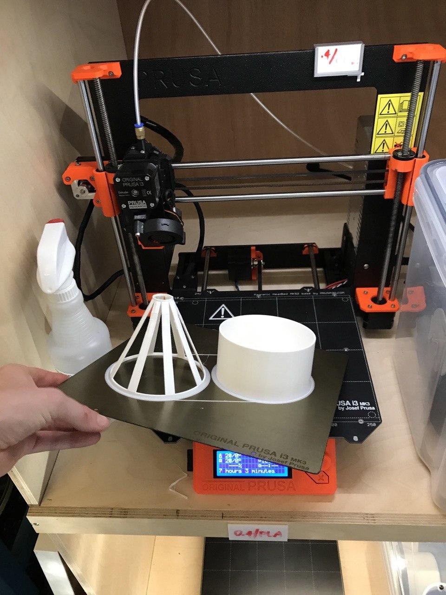

6.810 Engineering Interactive Technologies (fall 2021)
Lab 10: Slicing and 3D Printing the Lamp
In this lab, you will slice the 3D models of your lamp base and lamp shade and then 3D print them on one of our Prusa 3D printers.
Steps:
- Install Slicing Software
- Slice the Lamp 3D Models
- Check Printing Time & Sliced Geometry Before Printing
- Read 3D Printer Tutorials
- 3D Print the Lamp
Deliverables
At the end of the lab, upload to your student google drive:
- the slicing file from Prusa Slicer (.3mf file format)
- the 3D printable file as exported from Prusa Slicer (.gcode file format)
- 2-3 photos (.jpg or .png) of your 3D printed lamp, at least one photo where both parts are assembled
Help us Improve Class Materials for Lab10:
Please let us know if you had any trouble with slicing or 3D printing or if anything was confusing in the write up.
You can add your comments here.
Sign up for 3D Printing Slot: Since your 3D printed object will take 6-7 hours to print, we ask you to sign up for a 3D printing slot here. You will be able to 3D print once you finished lab 8 3D modeling + lab 9 slicing, which we will do on friday.
(1) Install Slicing Software
Slicing is the process of converting a 3D model first into 3D printable layers, and then each layer is further converted into an extrusion path the print head can follow to lay down filament (thereby creating the layer). The output of slicing is a .gcode file that includes all the instructions for the 3D printer to print the model.
Install Slicing Software: You can install the slicing software for the Prusa 3D printers from here. During installation, it will ask you which printer types to install. Make sure that you have the 'Prusa i3 MK3' installed (both for the 0.4mm and 0.6mm nozzles). Leave everything else to the default settings.
(2) Slice the Lamp 3D Models
Similar to the last lab, we have a video tutorial below on how to do the slicing. The video quality might be better if you click on the youtube icon in the lower left corner, which opens a new tab and you can set the quality to 1080p.
Load Models into Slicer: Load the .stl files of your lamp shade and lamp base that you exported from Blender both together into the PrusaSlicer.
Print Parameters: For our printing purposes, we want to set the following print parameters: layer height: 0.2mm, material: generic PLA, printer model: Prusa i3 MK3.
Slice the Model: Next, click on 'slice now' to start the slicing process.
Export G-code: Finally, click on 'export G-code' to save the gcode file for 3D printing.
(3) Check Printing Time & Sliced Geometry Before Printing
Since 3D printing is a time consuming process (i.e. our lamp base and lamp shade 3D models will print around 5.30h), please double check that your model and slicing settings are correct by following the steps below:
Check Printing Time: As you can see in the video, our lamp base and lamp shade models together print around 6.30h. Your printing time may vary by +/- 30 minutes since your 3D model will not be exactly the same as ours. If your printing time is significantly different, please let us know and we can check if there is a size/scaling issue.
Check if Geometry is still accurate: In addition, please check in the slicer if the 3D model geometry is still accurate after slicing. Since slicing converts geometry into 3D printing layers, rounding issues can occur. Especially, check if the recess inside the base is still visible after you sliced. If the recess is too thin, the slicer may round it and it will disappear during 3D printing. If you don't see it in the slicer, it will not be there after printing.
(4) Read 3D Printer Tutorials
We will 3D print at the IDC on the 3rd floor where we laser cut the stencils for spraying. The IDC has a rack of 9 x 3D printers, so a good number of you can print simultaneously. You can also use any other 3D printer on campus, but we can't guarantee that your print will work because we only tested it on the IDC 3D printers.
How to get to the IDC (N52-337): If you don't remember how to get to the IDC, you can find a description here.
Read 3D Printing Tutorials: Before you go to the 3D printer, please look at the 3D printing tutorials below that explain how to use the 3D printer (click on the images).
The tutorial here first describes the slicing process again, and then Step 19 'Operating the Prusa' onwards shows the 3D printing process:

This tutorial shows how to change the filament in the 3D printer. This will not be necessary for this lab but may come in handy some other time.
 .
.
(5) 3D Print the Lamp
When you come in for 3D printing, please look for the workshop manager. They will help you with your first print job. For us, the 3D Printing of the two parts looked like this (note that we printed with 'brim' on, you should print with 'brim' off, which is the default):
After printing, remove the 3D Printed objects from print bed:


Please check if the two parts of your lamp successfully assemble.
Deliverables
At the end of the lab, upload to your student google drive:
- the slicing file from Prusa Slicer (.3mf file format)
- the 3D printable file as exported from Prusa Slicer (.gcode file format)
- 2-3 photos (.jpg or .png) of your 3D printed lamp, at least one photo where both parts are assembled
Please let us know if you had any trouble with slicing or 3D printing or if anything was confusing in the write up.
You can add your comments here.